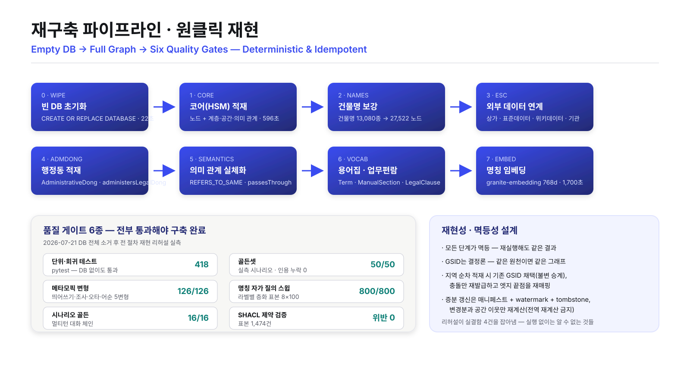
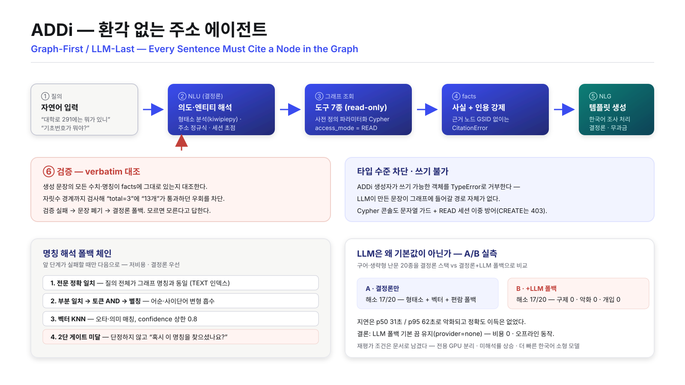
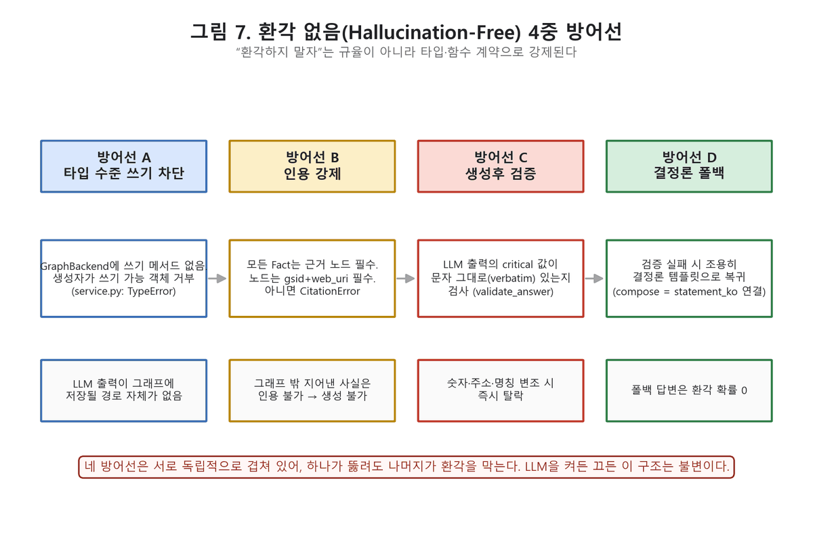
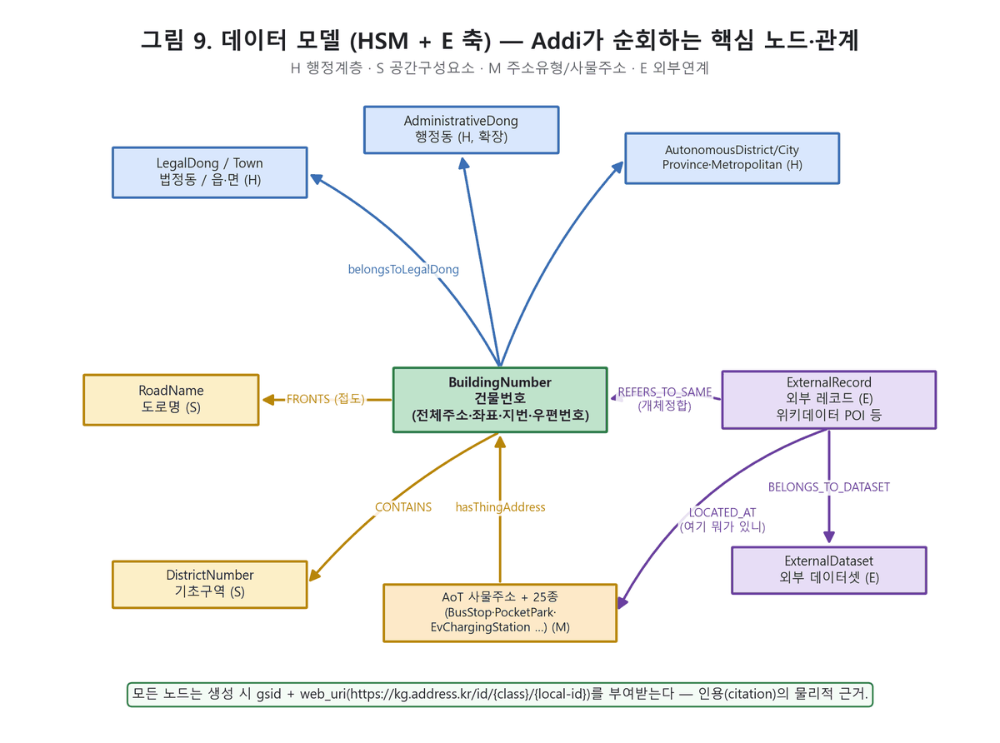
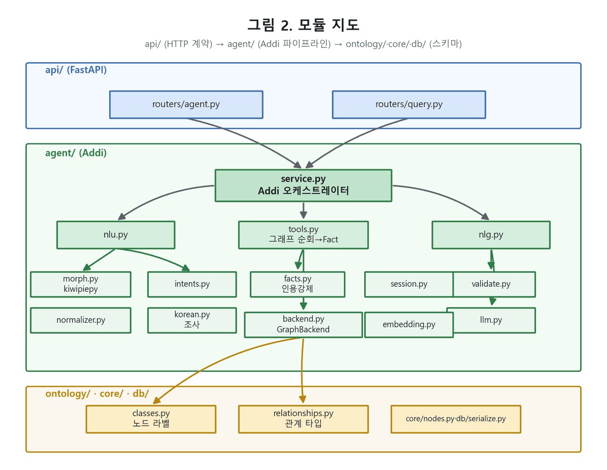

AddressKG — 국가주소정보 지식그래프






도로명주소 데이터를 노드와 링크로 분해해 Neo4j 위에 세운 주소 지식그래프. 표준 온톨로지를 따르는 Core Network(HSM — 계층·공간·의미)와 공공데이터를 잇는 External Network(ESC)로 구성되며, 환각 없는 주소 에이전트 ADDi와 3D 시각화, 전 기능 제어 API + 웹 콘솔을 함께 제공한다.
대전광역시·세종특별자치시 전수를 적재한 운영 그래프는 1,682,015개 노드와 5,527,976개 관계로 이루어진다. 모든 노드·링크에 결정론적 공간 식별자 GSID를 부여해 같은 원천이면 같은 그래프가 재현되며, 빈 DB에서 품질 게이트 6종 만점까지 도달하는 전 과정을 실제로 재구축해 재현성을 검증했다.
구조 · 설계
설계의 단일 출처(SSOT)는 표준 「주소정보 지식그래프 모델」(TTA, Part 1~3)이다. 코드가 아니라 온톨로지 데이터가 원천이고, 표준 명세서 웹판·RDF/OWL(ontology.ttl)·JSON-LD context·SHACL shapes·데이터 딕셔너리가 전부 그 SSOT에서 자동 생성된다. 그래프는 두 축으로 나뉜다. Core Network(HSM)는 표준 클래스로 정규화된 주소 요소 노드와 계층·공간·의미 관계를 담고, External Network(ESC)는 공공데이터 레코드를 주소 요소에 연결한다. 표준 클래스는 사물주소(AoT)를 13종 매핑 대신 25종 개별 클래스로 다루도록 개정하면서 42개에서 54개로, 관계는 61종에서 73종으로 늘었다. 표준 밖의 것은 표준을 오염시키지 않도록 확장 사전(EXTENSION_CLASSES·EXTENSION_RELATIONSHIPS·ESC_RELATIONSHIPS)에 분리 등재했다 — 출입구(Entrance)·hasEntrance, 행정동(AdministrativeDong)·administersLegalDong, ESC의 LOCATED_AT·BELONGS_TO_DATASET, 도로–법정동 관통 관계 passesThrough, 개체정합 REFERS_TO_SAME이 여기 속하며, 이들은 Part 2 개정 제안서로 자동 생성되어 표준에 환류된다. 식별자는 GSID(불변 내부키)와 표준 URI를 병존시켰다. GSID는 도메인 코드 + S2 Level16 셀 + 지상/지하 층위 + 세대 + 결정론 SEQ + Luhn mod-36 검증문자로 구성되며(예: BD-357CA3FE-G0-00-913547-I), 노드뿐 아니라 엣지에도 부여된다. 좌표 원천은 텍스트 DB가 아니라 주소 도형 shp(EPSG:5179)이고, 적재 과정에서 WGS84와 EPSG:5186으로 변환해 노드에 주입한 뒤 실좌표 S2로 GSID를 재발급한다. 공간·의미 관계는 하드코딩이 아니라 선언적 규칙 엔진이 만든다 — ADJACENT_TO(STRtree 접촉), FRONTS(출입구–도로 접점 기반, 접점이 없으면 주소 부여 도로 우선 폴백), NEAR(반경·k캡), CONTAINS(구역 포함 + 법정동 코드 교차검증), NEAR_ON_ROAD·ALONG·COLOCATED·SAME_AS 등이며, 규칙은 웹 콘솔에서 등록·수정·비활성화·재계산·삭제할 수 있고 전 조작이 감사 로그에 남는다. 외부 연계(ESC)는 pull 모델로, 데이터셋을 카탈로그에 선언하면 주소 코드조인(신뢰도 1.0) → 좌표(0.9) → 영역(0.8) 세 방식으로 링크하고 무매칭은 링크를 만들지 않고 레코드만 보존한다. 실제로 연계한 원천은 소상공인시장진흥공단 상가(상권)정보(대전 78,607 + 세종 15,423 = 94,030건, 좌표 링크 99.6%), 위키데이터 POI(CC0, 1,175건), 전국표준데이터 주차장(18,530건)·도서관·박물관미술관·공공시설개방(합계 11,605건), 행정안전부 지방자치단체 출자·출연기관(857개 기관)이다. 좌표가 없는 출자·출연기관은 외부 지오코딩 API 없이 그래프 자신의 건물번호 코드조인으로 자체 지오코딩했다. 여기에 지식 계층을 얹었다 — 주소용어집 SKOS TTL을 파싱해 Term 노드와 SKOS 매칭 엣지를 만들고, 주소정보 업무편람(560쪽)에서 용어·질의회신·업무 기준·장절 트리·본문 청크를 원문 그대로(요약·재작성 없이) 추출해 ManualSection 노드로, 법조 인용은 LegalClause 노드와 cites 관계로 실체화했다. 검색은 정확 일치 → 부분 일치 → 토큰 AND → 별칭 → 벡터 KNN 순의 폴백 체인이며, 벡터는 로컬 Ollama의 granite-embedding(768차원)으로 만든 무과금 임베딩을 쓴다. 제어 계층은 API-First다 — 적재·관계·질의·에이전트·장면·검증·명세·정제까지 모든 기능이 FastAPI /api/v1/*로 노출되고, 인증·RBAC(viewer/operator/admin)·감사가 게이트웨이에 있으며, 웹 콘솔(빌드 도구 없는 정적 vanilla JS SPA, 패널 11종)은 그 API만 소비한다. 시각화는 Cesium 기반 3D 뷰어(건물 footprint 압출·도로 중심선·구역 경계·관계 오버레이·인용 노드로 카메라 이동)와 외부 라이브러리 없이 자체 포스 레이아웃으로 만든 그래프 탐색 뷰어(2D/3D 토글, 형제 노드 접기, 우클릭 개선 제안)로 이원화했고, 뷰어는 정적 파일 5개짜리 단독 배포판으로도 패키징된다.
설계 목표
주소는 이미 국가 표준이 있는 데이터인데, 정작 "이 주소 옆에 무엇이 있는가", "이 도로는 어느 법정동을 지나는가", "이 기관의 표준 주소는 무엇인가" 같은 질문에는 각자 다른 시스템이 각자 다른 답을 내놓는다. 목표는 그 질문들이 하나의 그래프 위에서, 표준을 벗어나지 않고, 검증 가능한 근거와 함께 답해지도록 만드는 것이었다. 그래서 세 가지를 원칙으로 잡았다. 첫째, 표준이 SSOT다. 온톨로지가 코드보다 위에 있고 명세서·RDF·SHACL이 거기서 생성되므로 문서와 구현이 어긋날 수 없다. 표준에 없는 개념이 필요하면 표준을 몰래 늘리는 대신 확장 사전에 분리 등재하고 개정 제안서로 되돌려 보낸다. 둘째, 같은 원천이면 같은 그래프여야 한다. GSID를 해시가 아닌 결정론적 규칙으로 발급하고 모든 적재 단계를 멱등으로 만들어, 재실행하거나 다른 장비에서 처음부터 다시 만들어도 같은 식별자가 나오게 했다. 지역을 순차로 추가할 때는 먼저 발급된 GSID를 그대로 채택하고 충돌한 것만 재발급한 뒤 엣지 끝점을 재매핑해 식별자 불변을 지킨다. 증분 갱신은 매니페스트와 watermark, tombstone으로 처리하되 재계산 범위를 변경분과 그 공간 이웃으로 한정했다 — 전역 재계산은 결함으로 보고 잡아냈다. 셋째, 모르는 것은 모른다고 답한다. ADDi는 Graph-First / LLM-Last 파이프라인으로, 결정론 NLU가 의도와 엔티티를 해석하고 read-only 도구가 사전 정의된 파라미터화 Cypher만 실행해 사실(facts)을 모으며, 근거 노드의 GSID 없이는 문장을 만들 수 없다(CitationError). 생성된 문장은 숫자와 명칭이 사실에 그대로 있는지 자릿수 경계까지 대조해 검증하고, 실패하면 문장을 버리고 결정론 폴백으로 돌아간다. 에이전트 객체는 생성자에서 쓰기 가능한 백엔드를 TypeError로 거부해, 모델이 만든 문장이 그래프에 들어갈 경로 자체를 타입 수준에서 막았다. 이 원칙을 지키려면 "된다"는 감각이 아니라 측정이 필요했기 때문에 품질 게이트를 여섯 겹으로 세웠다 — 단위·회귀 테스트, 실측 시나리오 골든셋, 질의를 다섯 가지로 변형해 같은 개체로 수렴하는지 보는 메타모픽 러너, 라벨별 층화 표본을 자기 이름으로 되물어 자기 자신을 찾는지 보는 자가 질의 스윕, 멀티턴 대화 시나리오, 그리고 SHACL 제약 검증이다. 2026년 7월 DB를 통째로 지우고 런북 전 절차를 재현한 리허설에서 코어 적재 596초를 포함한 전 과정이 재현되었고 게이트는 pytest 418 · 골든 50/50 · 메타모픽 126/126 · 자가 질의 800/800 · 시나리오 16/16 · SHACL 표본 1,474건 위반 0으로 만점을 기록했으며, 그 과정에서 실행하지 않으면 드러나지 않을 실결함 4건을 잡아냈다. 게이트는 실제로 결함을 잡는 도구로 기능했다 — 메타모픽 러너는 첫 실행에서 75%로 시작해 A급 결함 5건을 잡아낸 뒤 100%가 되었고, 자가 질의 스윕은 69.3%에서 시작해 전문 정확 일치 프로브와 TEXT 인덱스 3종 도입(골든 p50 590ms → 165ms, 3.6배)으로 100%에 도달했으며, 골든셋은 스스로를 자정해 그동안 다른 지역명에 납치되어 우연히 통과하던 항목의 기댓값을 정직한 미해석으로 교정했다. LLM에 대해서도 같은 잣대를 적용했다. 로컬 소형 모델을 NLU 폴백으로 붙여 A/B로 실측한 결과 결정론 스택이 이미 난문 20종 중 17종을 해소했고 LLM은 구제 0건·악화 0건·유효 개입 0건인 반면 지연은 p50 31초로 나빠졌기에, 기본값을 provider=none으로 유지하기로 하고 재평가 조건(임베딩과 분리된 전용 GPU, 미해석률 상승 실측, 더 빠른 한국어 소형 모델)을 문서로 남겼다. 결과적으로 이 시스템은 유료 API 없이, 오프라인에서, 비용 0으로 동작한다. 마지막으로 그래프가 원천을 검증하는 방향도 열어 두었다 — 구역 포함 관계에서 코드와 공간이 어긋나는 182건을 품질 신호로 검출했고, 사물주소와 전국표준데이터를 교차 검증해 링크 거리 p50 12.9m·p95 50.2m의 정합도와 함께 사물주소가 부여되지 않은 주차장 396곳을 부여 후보로 도출해 표준 개정 제안서에 실었다. 도로 길이 속성이 비정상이던 문제도 원천의 값을 그대로 믿는 대신 본선 기하를 실측해 재집계했다.